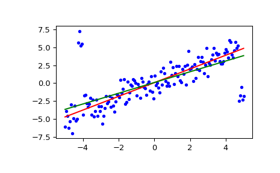

scipy.stats.siegelslopes¶
-
scipy.stats.siegelslopes(y, x=None, method='hierarchical')[source]¶ Computes the Siegel estimator for a set of points (x, y).
siegelslopesimplements a method for robust linear regression using repeated medians (see [1]) to fit a line to the points (x, y). The method is robust to outliers with an asymptotic breakdown point of 50%.- Parameters
- yarray_like
Dependent variable.
- xarray_like or None, optional
Independent variable. If None, use
arange(len(y))instead.- method{‘hierarchical’, ‘separate’}
If ‘hierarchical’, estimate the intercept using the estimated slope
medslope(default option). If ‘separate’, estimate the intercept independent of the estimated slope. See Notes for details.
- Returns
- medslopefloat
Estimate of the slope of the regression line.
- medinterceptfloat
Estimate of the intercept of the regression line.
See also
theilslopesa similar technique without repeated medians
Notes
With
n = len(y), computem_jas the median of the slopes from the point(x[j], y[j])to all other n-1 points.medslopeis then the median of all slopesm_j. Two ways are given to estimate the intercept in [1] which can be chosen via the parametermethod. The hierarchical approach uses the estimated slopemedslopeand computesmedinterceptas the median ofy - medslope*x. The other approach estimates the intercept separately as follows: for each point(x[j], y[j]), compute the intercepts of all the n-1 lines through the remaining points and take the mediani_j.medinterceptis the median of thei_j.The implementation computes n times the median of a vector of size n which can be slow for large vectors. There are more efficient algorithms (see [2]) which are not implemented here.
References
- 1(1,2)
A. Siegel, “Robust Regression Using Repeated Medians”, Biometrika, Vol. 69, pp. 242-244, 1982.
- 2
A. Stein and M. Werman, “Finding the repeated median regression line”, Proceedings of the Third Annual ACM-SIAM Symposium on Discrete Algorithms, pp. 409-413, 1992.
Examples
>>> from scipy import stats >>> import matplotlib.pyplot as plt
>>> x = np.linspace(-5, 5, num=150) >>> y = x + np.random.normal(size=x.size) >>> y[11:15] += 10 # add outliers >>> y[-5:] -= 7
Compute the slope and intercept. For comparison, also compute the least-squares fit with
linregress:>>> res = stats.siegelslopes(y, x) >>> lsq_res = stats.linregress(x, y)
Plot the results. The Siegel regression line is shown in red. The green line shows the least-squares fit for comparison.
>>> fig = plt.figure() >>> ax = fig.add_subplot(111) >>> ax.plot(x, y, 'b.') >>> ax.plot(x, res[1] + res[0] * x, 'r-') >>> ax.plot(x, lsq_res[1] + lsq_res[0] * x, 'g-') >>> plt.show()
